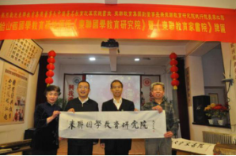
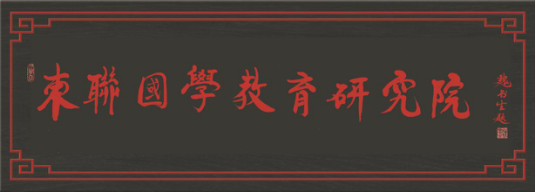
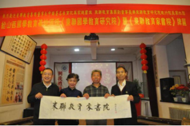
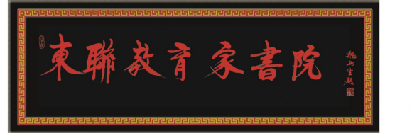
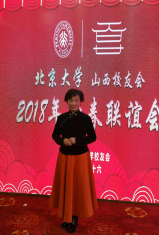

RESEARCH
東联研学
-
01/隆重挂牌成立《東联国学教育研究院》、《東联教育家书院》
    -
02/背景资料
2014年教师节时，习近平主席特别指出：“社会主义核心价值观与中华优秀传统文化教育，要从娃娃抓起，从学校抓起，做到进教材、进课堂、进头脑。我不赞成把古典经典诗词和散文从课本中去掉，‘去中国化’是很悲哀的，应该把这些经典嵌在学生脑子里，成为中华民族文化的基因”。
2017年1月25日，中共中央办公厅、国务院办公厅《关于实施中华优秀传统文化传承发展工程的意见》（简称“两办国学传承工程18条”）特别指出：“弘扬中华优秀传统文化，要围绕立德树人根本任务，贯穿国民教育始终，贯穿于启蒙教育、基础教育、职业教育、高等教育、继续教育各领域，以形成人人传承发展中华优秀传统文化的生动局面。”
“国学”一词，在近代出现只有一百多年，最早出现在清朝末年。1840年的鸦片战争，欧美列强的坚船利炮炸开了闭关锁国的清王朝大门。伴随着军事入侵，西方文化及价值观也潮水般的涌入中国，使中华民族处于生死存亡之关头。当时国人称西方文化为“西学”，与之相对应的中国传统文化便被称为“国学”，以示区别。中国古代也有“国学”这个名词，但概念与现在所说的不同，是指国家设立的学校。现当代广义“国学”之定义，指中国传统文化与学术研究的总和。国学，是流淌在血液的文化基因，是中国人对自己本源文化的认同与坚守。
山西，是尧、舜、禹的故乡，是中华传统文化的源头，是中华传统文化这棵参天大树的直根，是最早被称为“中国”的地方，是全世界华人的祭祖圣地，人们常说，五千年文明看山西。太原，是中国历史文化名城，因辈出真龙天子，辈出龙子龙孙，又被称为“龙城”，龙是中华民族的象征，中国人故称龙的传人。
-
03/国学分院成立及宗旨
2018年4月23-24日，東联教育集团董事长、中国著名教育改革家魏书生老师与東联教育集团副董事长李红旗先生一起莅临山西国学教育基地，举行了《東联国学教育研究院》、《東联教育家书院》授牌仪式，東联教育研究院又一专业分院-東联国学教育研究院在山西太原宣告成立。
山西国学教育基地创办人李刚教授、王建平院长是一个儒学世家、教育世家、书香世家。他们不忘初心，牢记使命，致力国学教育30载，其“家庭私塾”教育实验，实现了“父女两代北大人”的梦想，特别是近十几年来，国学基地培养的一批批国学小明星和培训的国学讲师，受到社会各界的一致好评。
在東联教育研究院的领导下，東联国学教育研究院将按照孔子“六艺”和国学大师梁启超先生：“少年智，则国智；少年强，则国强；少年雄于地球，则国雄于地球”的教育理念，按照中国私塾书院的教育传统，拟以筹办少年大学为龙头，开展从幼儿、小学、中学到大学的教育、科研、培训、论坛、游学、出版一体化的“千校万企”的教育工程

東联国学教育研究院院长 李刚 教授
国际儒学联合会教育委员 香港孔教学院名誉院长 山西省国学教育委员会主任 山西国学教育基地主任 北京大学山西校友会副会长
東联教育家书院院长 王建平 教授
教育部跨世纪学科带头人 山西省教学能手 山西省优秀教育工作者 山西省劳动模范 中国国学优秀教育工作者 山西太原龙城书院院长 北京大学山西校友会副秘书长 中央电视台2018榜样春晚榜样文化大使